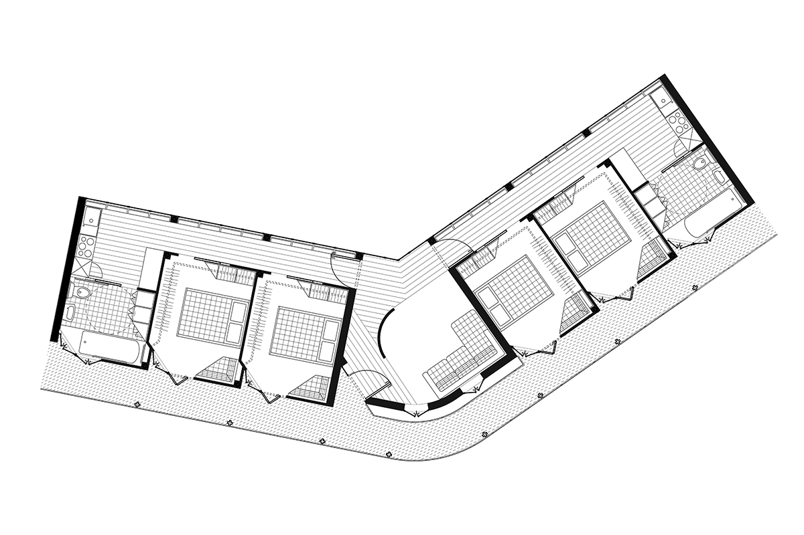
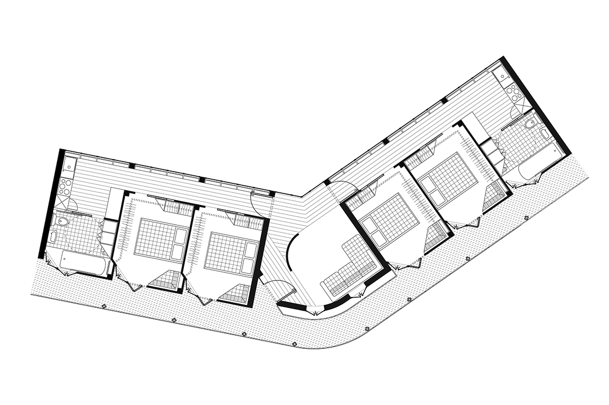
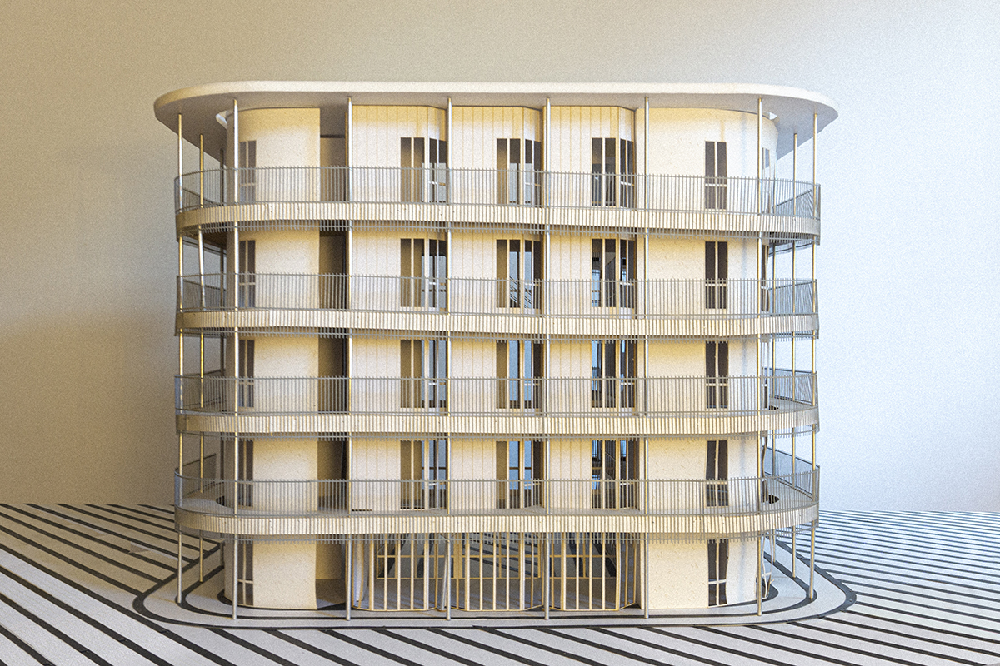
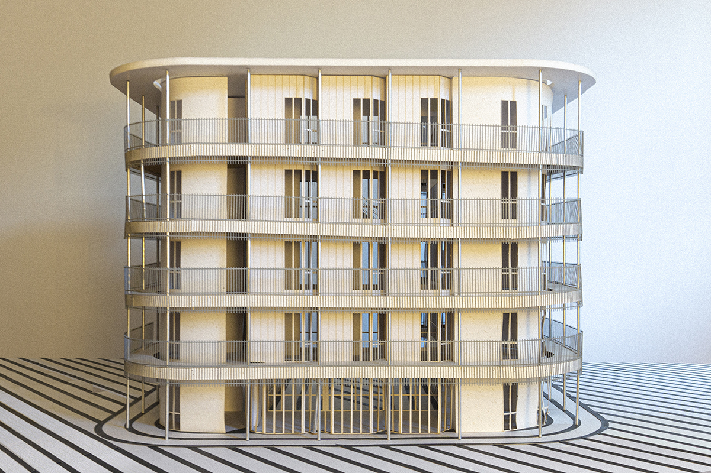

Students learn a hybrid digital/analogue workflow developed in conversation with computational tools. Recordings are taken “from the field” and translated to digital drawings and models, which are materialized through 3D printing and casting, which are re-digitized to become environmentally responsive prosthetics.
They are introduced to a number of advanced computational workflows, most of which are new. They are not expected to master them over the course of this short semester, but to understand how working digitally can be a generative strategy for releasing control.
We let ourselves become lost in the wilderness of the unfamiliar. If “working analog” means to reproduce a familiar or predetermined image, working digitally means to chart unknown processes and territories. We wander into this foggy alien terrain, and our motive is not to understand all of its symbols and coordinates—but to make sense of these feelings, to learn to swim in them.
 



 
